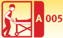
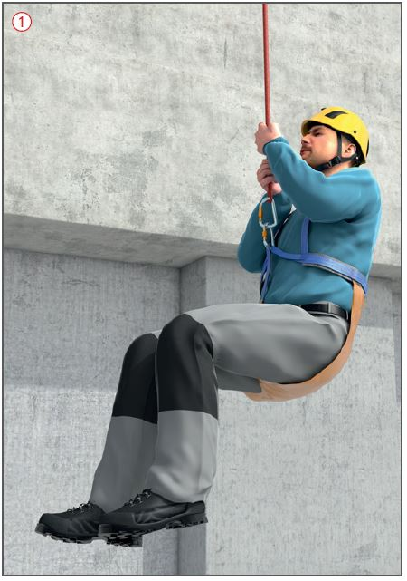
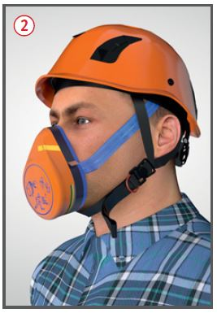
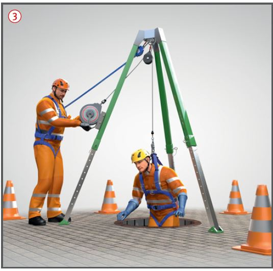
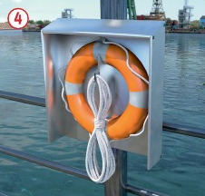
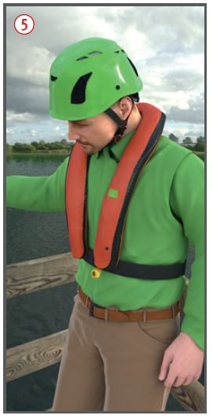

Rettungsgeräte
Rettungstransportmittel
|

|

Gefährdungen
- Die Rettung in Not geratener Personen ist gefährdet, wenn Rettungsverfahren nicht geübt werden bzw. Rettungsgeräte nicht verfügbar sind.
Allgemeines
- Der Unternehmer hat je nach
Art des Bauvorhabens oder der auszuführenden Arbeit Rettungsgeräte und -einrichtungen bereitzustellen.
- Die Beschäftigten sind in der Benutzung von Rettungsgeräten und -transportmitteln im Rahmen von Übungen besonders zu unterweisen.
- Die zur Verfügung gestellten Geräte, Ausrüstungen und Einrichtungen sind vor der Benutzung auf ihre Funktionsfähigkeit zu prüfen und mindestens jährlich durch einen Sachkundigen zu überprüfen.

Schutzmaßnahmen
Rettungskörbe, Tragewannen, Rettungsschlaufen 
- Verwendung bei schwer zugänglichen Arbeitsplätzen, z. B. bei Türmen, Schornsteinen oder Schächten.
Atemschutz 
- Z. B. Fluchtmasken zur Selbstrettung, wenn bei der Durchführung
von Arbeiten mit dem Auftreten
gefährlicher Stoffe in der
Atmosphäre gerechnet werden
muss, beispielsweise in oder an
chemischen Anlagen und Apparaturen.
Fluchtmaske mit ABEK-Filtern
ausgerüstet vorhalten.

Abseilgeräte, Rettungshubgeräte 
- Verwendung in Verbindung mit Auffang-/Rettungsgurten oder Rettungsschlaufen zur Rettung aus der Gefahr bei turmartigen Bauwerken (Türmen, Schornsteinen usw.) und bei Arbeiten in Behältern und engen Räumen (Silos, Schächten usw.). Befestigung nur an tragfähigen Bauteilen oder geeigneten Anschlageinrichtungen vornehmen.

Rettungsboote und Rettungsringe 
- Verwendung bei Arbeiten am,
auf oder über dem Wasser,
z. B. Flüsse und Seen.
- Bei stark
strömenden Gewässern
(v > 3,0 m/sec.) müssen
Rettungsboote mit Motorantrieb
ausgerüstet sein.
- Rettungsringe
deutlich sichtbar und leicht zugänglich
in Arbeitsplatznähe
bereithalten.

Rettungswesten 
- Müssen über eine Einrichtung
verfügen, die im Bedarfsfall die Weste mit einem Gas automatisch aufbläst.
- Feststoffwesten dürfen nicht eingesetzt werden.
- An der Verwendungsstelle von Rettungswesten sind Reservesets zur Wiederbereitmachung vorzuhalten.
- Die Benutzer von Rettungswesten sind über Tragepflicht, Funktion und Gebrauch der Rettungswesten zu unterweisen.
- Gebrauchsdauer der Rettungswesten von Einsatzbedingungen entsprechend der Herstellerangaben abhängig.
- Jährliche Überprüfung der Einsatzbereitschaft durch sachkundige Person durchführen lassen.
- Dokumentation der Überprüfung im Prüfbuch.
07/2021